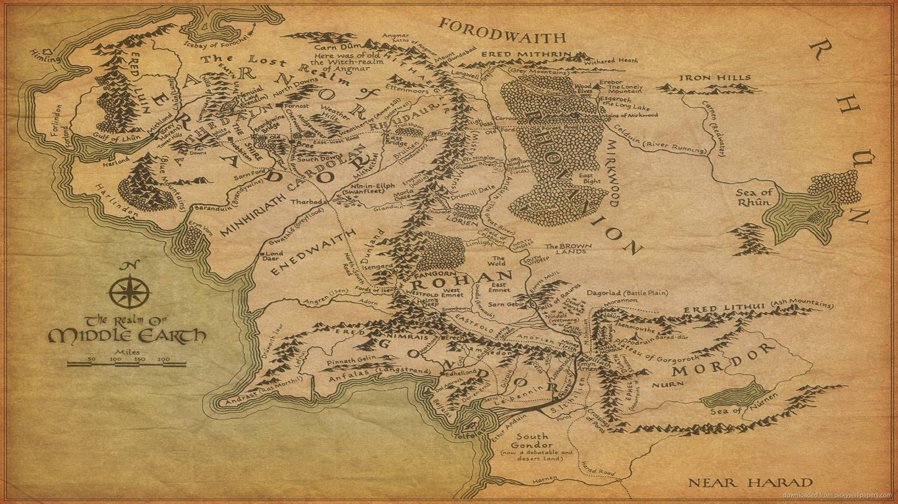
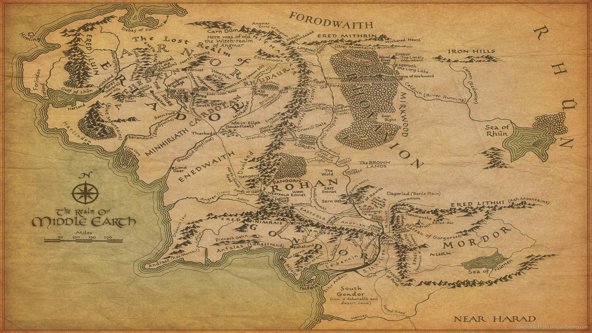

El anillo fue forjado en el monte del destino. Su inscripción dice: Un anillo para gobernarlos a todos. Un anillo para encontrarlos, un anillo para atraerlos a todos y atarlos en las tinieblas.
 

Este es el mapa de la tierra media. El señor de los anillos y el hobbit, sus libros más conocidos se emplazarian en la tercera edad. El mapa está muy detallado. Lo dibujó el propio Tolkien.
En la imagen superior está la portada del libro del hobbit. Este libro es anterior al señor de los anillos y es el primero en explorar el universo mitológico.
Esto es Rivendel tal como se ve en la pelicula dirigida por Peter Jackson. Aparece en el hobbit y el señor de los anillos. Y es donde habita Elrond, un medio elfo.